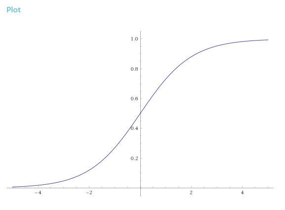

Regression (H.C.G)
[복습] 배웠던 개념 및 공식을 생각해 보기!
-
Hypothesis :
-
Cost :
-
Gradient descent :
기울기 :
learning rate :(Weight를 찾는 그래프에서 dot하나하나의 step 간극이 learning rate가 된다)
Classification
Binary Classification
example
- Spam Detection : Spam or Ham
- Facebook feed : Show or Hide
- Credit Card Fraudulent Transaction detection : Legitimate or Fraud
0, 1 encoding
- Spam Detection : Spam(1) or Ham(0)
- Facebook feed : Show(1) or Hide(0)
- Credit Card Fraudulent Transaction detection : Legitimate(1) or Fraud(0)
결국 Linear Regression과 같다?
Y값은 결국 0 or 1인데,
기존의 linear regression의 hypothesis 함수는
위 식에 의하면 hypothesis 값은 충분히 1보다 크거나 0보다 작을 수 있다.
그렇기 때문에 linear regression과는 엄연히 다르다.
그래서 등장한 대안
a.k.a Sigmoid function

Logistic Hypothesis
정리
Cost
기존의 cost함수(in linear regression)
logistic regression에서의 gradient descent로 나타낸 cost fucntion graph
- local minimum과 global minimum의 개념

시작점에 따라 minimized cost값이 달라지기 때문에 linear regression에서 사용한 gradient descent 알고리즘을 사용할 수 없다!
New cost function for logistic
understanding cost function
이므로 x범위는 0보다 크고 1보다 작다.
y = 1, y = 0 에 해당하는 그래프를 그려서 분석해본다.
목표 값 y 가 1일때 예측 값 H(x) 값이 0에 가까울 수록 cost값이 매우 커지는 것을 확인할 수 있다.
목표 값 y 가 0일때 예측 값 H(x) 값이 1에 가까울 수록 cost값이 매우 커지는 것을 확인할 수 있다.
Cost function (Final definition)
Minimize cost - Gradient descent algorithm
위 공식은 코드에서도 그대로 적용된다.
sample_code_logistic_regression.py
# cost function
cost = tf.reduce_mean(-tf.reduce_sum(Y*tf.log(hypothesis) + (1-Y)*tf.log(1-hypothesis)))
# Minimize
a = tf.Variable(0.1) # Learning rate, alpha(in the formula)
optimizer = tf.train.GradientDescentOptimizer(a)
train = optimizer.minimize(cost)